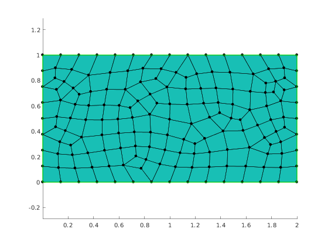

Draw mesh and some mesh entities stars
Contents
Access test data file.
For explanation see deomo mp_readMesh.
mp_test_initialize();
fhandle = mp_test_data_fopen('rectangle_quads.msh');
mesh = mp.readMesh(fhandle);
Show mesh
viewer = mp.Viewer(); viewer.show(mesh);
Star for vertex seeds
The seeds are some vertices while star elements are edges and faces adjacent to the seeds.
The meaning of IDs and the selection of adjacency relations to build a star is done by specifying topological dimension of mesh entities. The dimensions are:
- 0 for vertices
- 1 for edges
- 2 for faces
- 3 for cells (currently not implemented)
One can either use numeric values or a mp.Topo enumerator. There are two ways of using Topo enumerator:
- use Topo constructor: mp.Topo(dim) where dim is 0,1,2 or 3
- use enum names: mp.Topo.V or mp.Topo.Vertex , etc.
In the example below the seed are vertices [46, 74, 35, 18] and the star is build from faces and edges adjacent to these vertices.
viewer.showStar(mesh, mp.Topo.Vertex, [46, 74, 35, 18], [mp.Topo.Face, mp.Topo.Edge]);
Star for edge seeds
The seeds are edges and the star elements are adjacent edges.
viewer.stackFigure(); viewer.show(mesh); viewer.showStar(mesh, mp.Topo.Edge, [21,56, 88, 102], mp.Topo.Edge);
Star for cell seeds
The seeds are faces and star elements are the adjacent faces.
viewer.stackFigure(); viewer.show(mesh); viewer.showStar(mesh, mp.Topo.Face, [21,56], mp.Topo.Face);
Second order stars
Second order stars are stars of stars. For the example below the seed is an element, first order star elements are its vertices and the second order star elements are the faces adjacent to these vertices.
viewer.stackFigure(); viewer.show(mesh); viewer.showStar2(mesh, mp.Topo.Face, 10, mp.Topo.Vertex, mp.Topo.Face); mp_manage_demos('report', 'mp_view_stars', true);